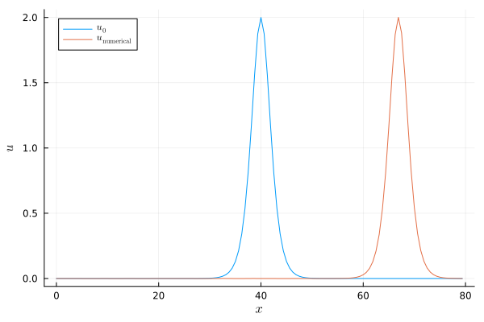

Korteweg-de Vries equation
Let's consider the Korteweg-de Vries (KdV) equation
\[\begin{aligned} \partial_t u(t,x) + \partial_x \frac{u(t,x)^2}{2} + \partial_x^3 u(t,x) &= 0, && t \in (0,T), x \in (x_{min}, x_{max}), \\ u(0,x) &= u_0(x), && x \in (x_{min}, x_{max}), \\ \end{aligned}\]
with periodic boundary conditions. The KdV equation has the quadratic invariant
\[ J = \frac{1}{2} \int u(t,x)^2 \mathrm{d}x.\]
A classical trick to conserve this invariant is to use following split form
\[ u_t + \frac{1}{3} (u^2)_x + \frac{1}{3} u u_x + \partial_x^3 u = 0.\]
Indeed, integration by parts with periodic boundary conditions yields
\[\begin{aligned} \partial_t J &= \int u u_t = -\frac{1}{3} \int u (u^2)_x - \frac{1}{3} \int u^2 u_x - \int u \partial_x^3 u \\ &= 0 + \frac{1}{3} \int u_x u^2 - \frac{1}{3} \int u^2 u_x + 0 = 0. \end{aligned}\]
Basic example using finite difference SBP operators
Let's create an appropriate discretization of this equation step by step. At first, we load packages that we will use in this example.
using SummationByPartsOperators, OrdinaryDiffEqRosenbrockusing LaTeXStrings; using Plots: Plots, plot, plot!, savefigNext, we specify the initial data as a Julia function as well as the spatial domain and the time span. Here, we use an analytic soliton solution of the KdV equation for the initial data.
# traveling wave solution (soliton)get_xmin() = 0.0 # left boundary of the domainget_xmax() = 80.0 # right boundary of the domainget_c() = 2 / 3 # wave speedfunction usol(t, x) xmin = get_xmin() xmax = get_xmax() μ = (xmax - xmin) / 2 c = get_c() A = 3 * c x_t = mod(x - c*t - xmin, xmax - xmin) + xmin - μ A / cosh(sqrt(3*A) / 6 * x_t)^2endtspan = (0.0, (get_xmax() - get_xmin()) / (3 * get_c()) + 10 * (get_xmax() - get_xmin()) / get_c())(0.0, 1240.0)Next, we implement the semidiscretization using the interface of OrdinaryDiffEq.jl which is part of DifferentialEquations.jl. For simplicity, we just use the out-of-place version here since we do not have to worry about appropriate temporary buffers when using automatic differentiation in implicit time integration methods.
function kdv(u, parameters, t) D1 = parameters.D1 D3 = parameters.D3 # conservative semidiscretization using a split form return (-1 / 3) * (u .* (D1 * u) + D1 * (u.^2)) - D3 * uendkdv (generic function with 1 method)Next, we choose first- and third-derivative SBP operators D1, D3, evaluate the initial data on the grid, and set up the semidiscretization as an ODE problem.
N = 128 # number of grid pointsD1 = periodic_derivative_operator(derivative_order=1, accuracy_order=8, xmin=get_xmin(), xmax=get_xmax(), N=N)D3 = periodic_derivative_operator(derivative_order=3, accuracy_order=8, xmin=get_xmin(), xmax=get_xmax(), N=N)u0 = usol.(first(tspan), grid(D1))parameters = (; D1, D3)ode = ODEProblem(kdv, u0, tspan, parameters);ODEProblem with uType Vector{Float64} and tType Float64. In-place: false
Non-trivial mass matrix: false
timespan: (0.0, 1240.0)
u0: 128-element Vector{Float64}:
5.2371088845943444e-14
8.724018505611473e-14
1.4532540866227717e-13
2.4208424580109605e-13
4.032659023947894e-13
6.717636147537472e-13
1.119029284219571e-12
1.864088068240953e-12
3.1052130405874536e-12
5.1726890975335685e-12
⋮
5.1726890975335685e-12
3.1052130405874536e-12
1.864088068240953e-12
1.119029284219571e-12
6.717636147537472e-13
4.032659023947894e-13
2.4208424580109605e-13
1.4532540866227717e-13
8.724018505611473e-14Finally, we can solve the ODE using a Rosenbrock method with adaptive time stepping. We use such a linearly implicit time integration method since the third-order derivative makes the system stiff.
sol = solve(ode, Rodas5(), saveat=range(first(tspan), stop=last(tspan), length=200))plot(xguide=L"x", yguide=L"u")plot!(evaluate_coefficients(sol.u[1], D1), label=L"u_0")plot!(evaluate_coefficients(sol.u[end], D1), label=L"u_\mathrm{numerical}")savefig("example_kdv.png");"/home/runner/work/SummationByPartsOperators.jl/SummationByPartsOperators.jl/docs/build/tutorials/example_kdv.png"
Advanced visualization
Let's create an animation of the numerical solution.
using Printf; using Plots: Animation, frame, giflet anim = Animation() idx = 1 x, u = evaluate_coefficients(sol.u[idx], D1) fig = plot(x, u, xguide=L"x", yguide=L"u", xlim=extrema(x), ylim=(-0.05, 2.05), label="", title=@sprintf("\$t = %6.2f \$", sol.t[idx])) for idx in 1:length(sol.t) fig[1] = x, sol.u[idx] plot!(title=@sprintf("\$t = %6.2f \$", sol.t[idx])) frame(anim) end gif(anim, "example_kdv.gif")end
Package versions
These results were obtained using the following versions.
using InteractiveUtilsversioninfo()using PkgPkg.status(["SummationByPartsOperators", "OrdinaryDiffEqRosenbrock"], mode=PKGMODE_MANIFEST)Julia Version 1.10.11
Commit a2b11907d7b (2026-03-09 14:59 UTC)
Build Info:
Official https://julialang.org/ release
Platform Info:
OS: Linux (x86_64-linux-gnu)
CPU: 4 × Intel(R) Xeon(R) 6973P-C
WORD_SIZE: 64
LIBM: libopenlibm
LLVM: libLLVM-15.0.7 (ORCJIT, icelake-client)
Threads: 2 default, 0 interactive, 1 GC (on 4 virtual cores)
Environment:
JULIA_PKG_SERVER_REGISTRY_PREFERENCE = eager
Status `~/work/SummationByPartsOperators.jl/SummationByPartsOperators.jl/docs/Manifest.toml`
[43230ef6] OrdinaryDiffEqRosenbrock v2.6.3
[9f78cca6] SummationByPartsOperators v0.5.97-DEV `~/work/SummationByPartsOperators.jl/SummationByPartsOperators.jl`